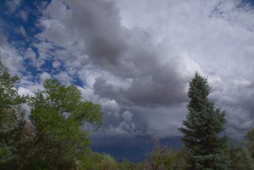

Welcome to my homepage! There isn't a lot here yet, but there will be soon.
Visit my quote board! I also take photos like this one:
View the full, high resolution shots on Google Photos.
This website was built using Kobayashi, a static site generator that I have created for the specific purpose of building this site! Right now, it only creates very basic sites like this one, but as it gains support for more features my site will evolve as well.
Email: jameshurd [at] ku [dot] edu.